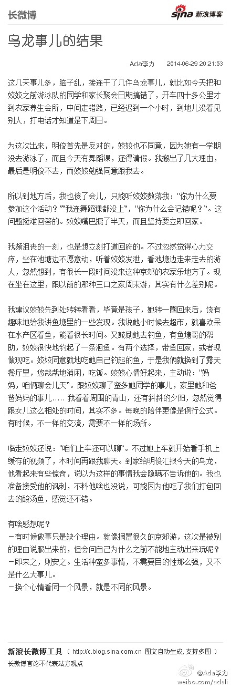

一流公司以理念影响人。- 富爸爸作者曾在美国海军陆战队参与越战，支持南越，但那个时候他就认为装备更精良的南越和美国打不赢这场战争，斗志完全不能比。这个发现影响到他对公司的看法。@每日打开:发表了博文 《一流公司以兴趣治人，二流公司以制度治人，三流公司以人治人》 - 扯一扯公司管理。 我带人是以兴趣为起点的，不喜欢过多的条条框框，开心就好。从社区版主，到一个小团队，再到自己的小站，大家能 一流公司以兴趣治人，二流公司以制度治人，三流公司以人治人
乌龙事儿的结果：这几天事儿多，脑子乱，接连干了几件乌龙事儿，就比如今天把和姣姣之前游泳队的同学和家长聚会日期搞错了，开车四十多公里才到农家养生会所，中间走错路，已经迟到一个小时，到...文字版>> 网页链接 （新浪长微博>> 网页链接） 
#姣姣#说农家乐钓鱼吃鱼没意思，问她有意思的活动，她说是滑雪，我说你中爸爸毒太深，我就不喜欢你天天跟爸爸在家里宅着。出来转转，见见不同的朋友，是很好的拓展知识和视野的方式。姣姣问：“你不喜欢爸爸？那你为什么和他结婚”。我解释：”再喜欢一个人，也时不时会有烦他烦得不得了的时候啊“
#姣姣#说不喜欢我和明俊吵架，我说那是我们的交流方式，只是声音大了些。真正的吵架是相互伤害，但我和明俊的吵架不记仇，马上就恢复正常。姣姣仍旧说不喜欢，我就保证以后尽量少吵架，或者吵的声音放小些，但肯定做不到杜绝。